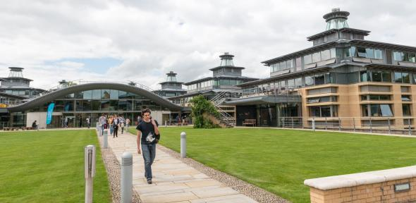

Flexibility: a course that suits you
Two aspects of the course that our students greatly appreciate are its flexibility and the breadth of subjects offered. The amount of choice increases each year and after Year 1 you can choose the number of options you study. Some students take as many lecture courses as they can; others take fewer and study them very thoroughly.
This structure allows you to keep your options open, giving you the opportunity to discover your strengths, extend your knowledge and develop your interests before specialising.
UCAS code
Start date
October 2024
Duration
3 or 4 years
-BA (Hons) or MMath
Colleges
Available at all Colleges
2022 Entry
Applications per place: 6
Number accepted: 252
Open days
15 September 2023
Related courses
Department website
Contact email
vcseu@seu.ac.lk
Contact telephone
+94 67 2255062
Our Faculty
Since Sir Isaac Newton was Lucasian Professor (1669-96), mathematics teaching and research here have been enhanced by a string of brilliant mathematicians, including six Fields Medallists and even Nobel Prize winners. Most current Faculty members are leading international authorities on their subject.
Our Faculty is also closely linked with the Isaac Newton Institute , which attracts specialists from all over the world to tackle outstanding problems in the mathematical sciences.
Course costs
Tuition fees
Information on tuition fee rates for History of Art is available on the tuition fees page.

Additional course costs
Required: a laptop - cost if purchased new will depend on choice, but existing laptops if less than four years old are likely to be completely adequate for the course needs.
Aside from the above, there are no other compulsory additional course costs for Mathematics. Some students choose to purchase their own copy of certain texts but this is optional. Full course details are available on the Faculty of Mathematics website. If you have any queries about resources/materials, please contact the Faculty.

Changing course
About 5-10% of students change from Mathematics each year. Many of these have taken the Mathematics with Physics option in their first year, with the intention of changing to Physics (Natural Sciences).
Over the years, mathematicians have changed successfully to many other subject taught at Cambridge. However, it's not advisable to apply for Mathematics intending to transfer to a subject other than Physics.
If your first subject has a two-year Part I, you need to consider the implications – especially the financial implications – of four years as an undergraduate..
To be able to change course, you need the agreement of your College that any change is in your educational interests, and you must have the necessary background in the subject to which you wish to change – in some cases you may be required to undertake some catch-up work or take up the new course from the start/an earlier year. If you think you may wish to change course, we encourage you to contact a College admissions office for advice. You should also consider if/how changing course may affect any financial support arrangements.

Careers
A Cambridge Mathematics degree is versatile and very marketable. The demand for our mathematicians is high in business, commerce and industry, as well as the academic world.
Around 38% of our students go on to further study¹, while others follow a wide variety of careers. Recent graduates include a metrologist, games designer, biomedical research scientist, sports statistician, journalist, cybersecurity analyst, and an AI research engineer, as well as teachers, actuaries, accountants, IT specialists, financiers and consultants.
STEP
STEP consists of two examination papers used to assess your aptitude for university study in Mathematics. It's used as part of almost all conditional offers in Mathematics (including Mathematics with Physics). The University offers a free online STEP support programme designed to help prospective applicants develop advanced problem-solving skills and prepare for the STEP exams.
¹ Based on responses to the Graduate Outcomes survey. This records the outcomes of students who completed their studies between August 2019 and July 2020. 56% of Mathematics graduates responded to the survey.